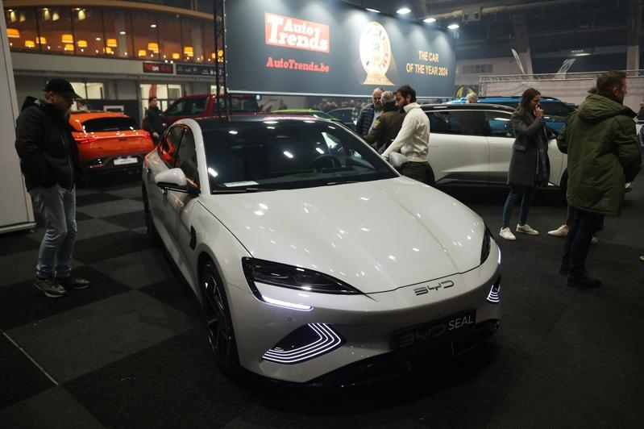

中国电动车领导品牌比亚迪在波兰的首家经销商门店，6日在波兰首都华沙正式开业。截至目前，比亚迪已将7款新能源车型推向欧洲20多个国家。
比亚迪运行副总裁兼比亚迪美洲地区总裁李柯、比亚迪欧洲汽车销售事业部总经理舒酉星、以及波兰最大的汽车经销商集团 Cichy-Zasada 代表共同出席，并现场见证海豹车主交付仪式。
比亚迪今年5月宣布将在波兰陆续推出海豹、BYD SEAL U和海豚三款车型。除首都华沙外，还计划在波兹南、乐斯拉夫、克拉科夫和斯塞新等城市开设门店。
比亚迪今年一月与匈牙利塞格德市政府正式签署比亚迪匈牙利乘用车工厂的土地预购协议，该工厂将在三年内置成并投入运营，主要生产在欧洲销售的乘用车车型。
比亚迪董事长兼总裁王传福当时表示，通过本地化生产制造，比亚迪将加快打造具有欧洲本地化品牌属性的产品，与欧洲形成更紧密的商业交流和互补合作，共同推动产业绿色低碳转型和全球可持续发展。